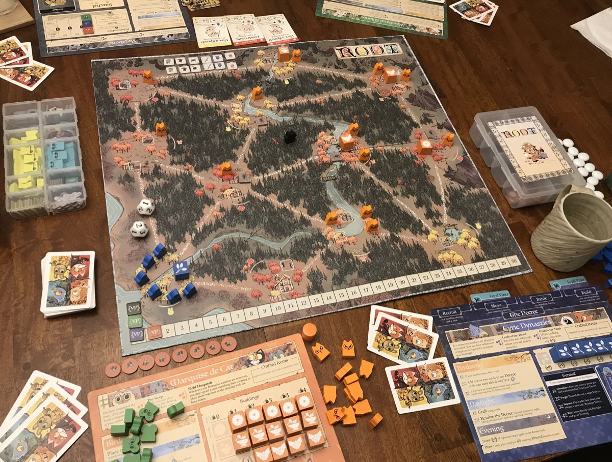
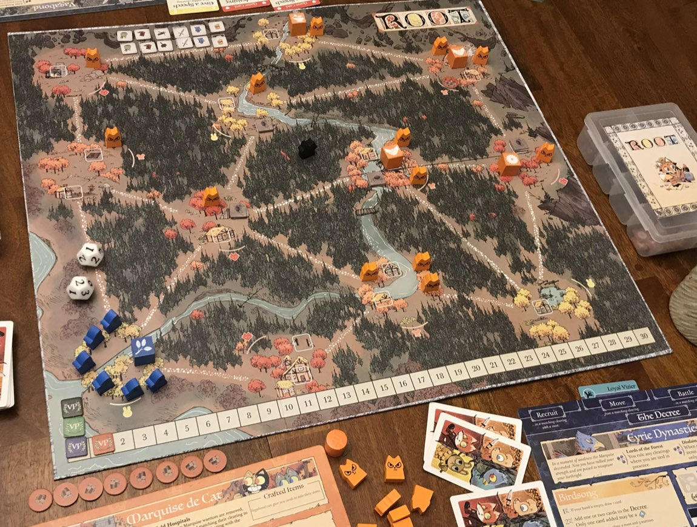
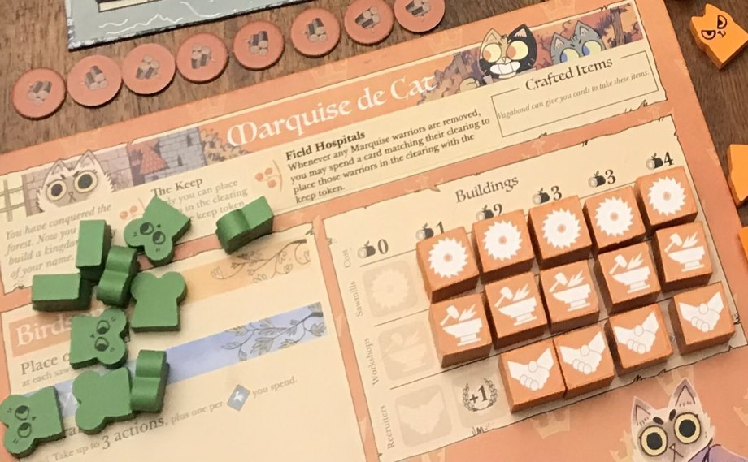
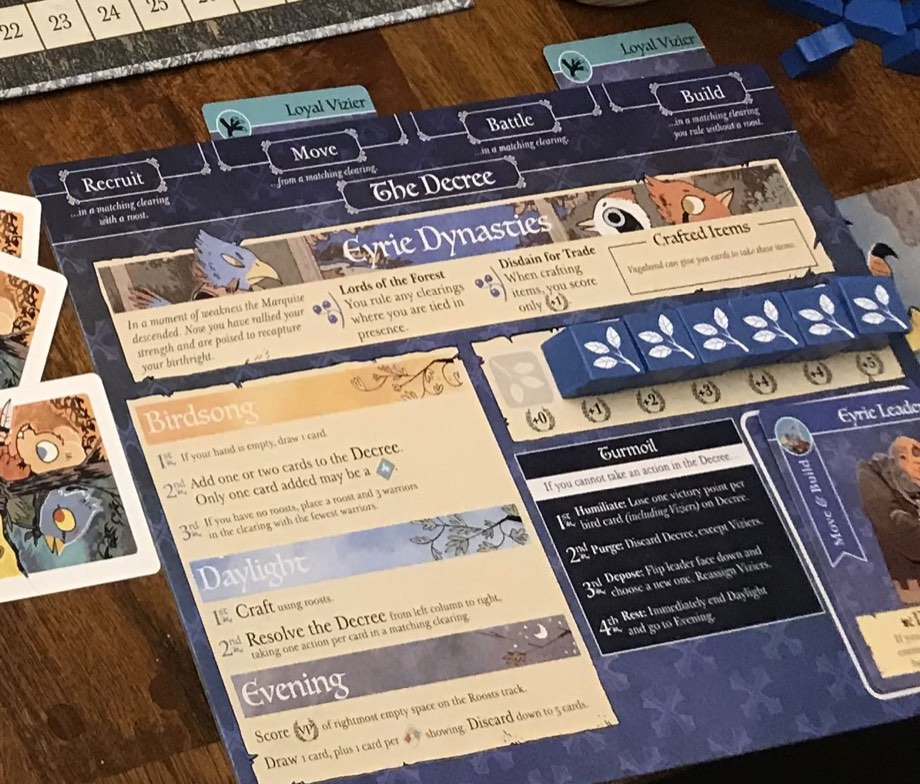

Elige cuántos sois y qué facciones jugáis. La guía comprueba el alcance y te genera la lista de montaje exacta para esas facciones.
Cada facción tiene un alcance: cuánto empuja el juego. Suma los alcances de las facciones elegidas y compara con el mínimo de tu número de jugadores. Es la regla oficial para que una mezcla no sea sosa.
Las del propio reglamento, por si no queréis calcular. Toca una para cargarla.
Las facciones se montan en el orden de la letra impresa en cada tablero (A, B, C…). El orden de las letras impresas en los reversos es: Marquesa A, Águilas B, Alianza C, Vagabundo D, Culto F y Compañía G. La Marquesa planta la fortaleza primero porque las Águilas y el Culto se colocan en relación a ella.
| Jugadores | Alcance mínimo |
|---|---|
| 2 | 17 |
| 3 | 18 |
| 4 | 21 |
| 5 | 25 |
| 6 | 28 |
| Facción | Alcance |
|---|---|
| ● Marquesa de los Gatos | 10 |
| ● Dinastías de las Águilas | 7 |
| ● Vagabundo (1.º / 2.º) | 5 / 2 |
| ● Compañía del Río | 5 |
| ● Alianza del Bosque | 3 |
| ● Culto Reptiliano | 2 |
Con dos vagabundos el segundo cuenta solo 2 de alcance, y hay reglas propias: dos objetos «R» por ruina, orden de montaje al azar entre ellos y las tres misiones se comparten.
Las cuatro cosas que hacen falta con la partida en marcha: el marcador, quién gobierna, resolver un combate y de quién es el turno.
Según de quién sea el turno y en qué fase estéis, aquí salen los pasos exactos de esa facción. Ve marcándolos.
Gana quien llega a 30. Si varios llegan a la vez, gana el empatado más cercano en sentido horario a quien juega el turno, contándole a él (Ley 3.1.1).
Se guarda en este navegador. «Reiniciar», arriba, lo borra todo.
El gobernante es quien tiene más guerreros + edificios en el claro. Los tokens y los peones no cuentan. En empate nadie gobierna… salvo las Águilas, que sí gobiernan empatando, y el Culto, que gobierna cualquier claro donde tenga un jardín.
| Facción | Guerreros | Edificios | Total |
|---|
Tira los dos dados de verdad y mete aquí los resultados. La guía aplica el tope de guerreros, el bonus de indefenso y la Guerra de Guerrillas de la Alianza.
Los 12 claros del mapa de Otoño con sus palos, sus huecos de edificio y sus caminos. Toca un claro para verlo todo, o cambia de modo para que el mapa te ayude a montar la partida y a cazar dominios.
Es un diagrama, no una copia del tablero impreso: los palos, los huecos y los caminos son exactos, y las posiciones están colocadas para que se lea bien y las esquinas caigan donde caen en el tablero de verdad.
Lo que no está: el río, los bosques y las 4 ruinas. Esos sí están en el tablero físico: míralos ahí. Prefiero dejar un hueco antes que dibujarte un río que no he podido verificar.
Así se ve una mesa montada, en el turno 1. Puedes localizar la fortaleza de la Marquesa (las piezas naranjas por todo el mapa), el nido de las Águilas en la esquina opuesta (azul) y el Vagabundo metido en un bosque.


Zorro, conejo o ratón. Lo marcan el color de los árboles y un iconito del animal junto al claro. Decide qué cartas sirven ahí: para construir, reclutar, fabricar, emboscar o extender simpatía.
Los cuadros blancos dentro del claro. Hay de 1, 2 y 3. Un claro sin huecos libres no admite más edificios — y un hueco con una ruina está bloqueado hasta que el Vagabundo la vacíe.
Las líneas de puntos. Dos claros son adyacentes si los une un camino. El río (azul) no es un camino, salvo para la Compañía y quien le compre barcos.
Los 4 claros de las puntas. Ahí va la fortaleza de la Marquesa, el primer nido de las Águilas en la diagonal opuesta, y el Culto en otra. Y son la condición del dominio de pájaro.
Ocupa el bosque y quiere convertirlo en una potencia industrial. Puntúa construyendo: cuantos más edificios del mismo tipo tenga, más puntos le da el siguiente. Para construir necesita madera, y la madera solo viaja por claros que ella gobierne.
Solo la Marquesa puede colocar piezas en el claro de la fortaleza. Otros sí pueden mover piezas hacia ahí. Si le retiran el token de fortaleza, se va a la caja: no vuelve.
Cuando le retiran guerreros de un claro —en combate o por cualquier motivo—, puede gastar una carta del palo de ese claro y colocar a todos ellos en el claro de la fortaleza. Una carta por claro, no por guerrero (Ley 6.2.3).
Fabrica en el Daylight, activando talleres. El palo de un taller es el del claro donde está.
Para pagar un edificio puedes gastar madera del claro elegido, de claros adyacentes que gobiernes, o de claros conectados al elegido a través de cualquier cadena de claros que gobiernes. Si te rompen la cadena —basta que dejes de gobernar un claro intermedio—, la madera del otro lado deja de servir. Partir la cadena de la Marquesa es la mejor forma de frenarla.
Cada track tiene 6 espacios. En el montaje se llenan todos menos el de más a la izquierda (ahí va el edificio que ya plantas en el mapa). Al construir coges el edificio de más a la izquierda que quede: pagas la madera que indica la cabecera de su columna y, al levantarlo, anotas los puntos que quedan al descubierto debajo.
Arriba, el coste en madera de cada columna: 0 · 1 · 2 · 3 · 3 · 4, igual en los tres tracks. Los puntos están impresos debajo de cada edificio y los ves al levantarlo — crecen hacia la derecha, pero esos no te los doy de memoria: léelos en tu tablero.

Si te destruyen un edificio, vuelve al espacio vacío de más a la derecha de su track. Es decir: el siguiente que construyas vuelve a dar los puntos altos. Destruir edificios de la Marquesa la frena, pero también le reabre los puntos buenos.
Coloca una madera en cada aserradero. Nada más.
Primero puedes fabricar activando talleres. Después, hasta 3 acciones en cualquier orden y combinación. ¿Quieres una cuarta? Gasta una carta de pájaro por cada acción extra.
Roba 1 carta + 1 por cada bonus de robo descubierto en tu tablero. Si pasas de 5 cartas, descarta hasta 5.
| Cómo | Cuánto |
|---|---|
| Construir un edificio | Los que quedan al descubierto en el track |
| Retirar un edificio o token enemigo | 1 por pieza |
| Fabricar un objeto | Los de la carta |
Encadenando claros gobernados para que la madera fluya, y subiendo los tres tracks a la vez: el 5.º y 6.º edificio de cada tipo son el grueso de sus 30 puntos. Arranca con todo el mapa ocupado con un guerrero por claro.
No le mates guerreros sueltos: córtale la red. Quítale el gobierno de un claro intermedio y su madera queda aislada. Destruirle aserraderos duele más que matarle tropa, y cada edificio que le tiras te da un punto.
El ejército más fuerte del juego, atado a su propia burocracia. Puntúa cada Evening según cuántos nidos tenga en el mapa. Pero cada turno añade cartas al Decreto y tiene que cumplirlo entero: el día que no pueda, cae en Tumulto y pierde puntos.
Gobiernan un claro incluso empatando en guerreros + edificios. Pero no gobiernan claros vacíos. Es la única facción que gana los empates… y el Culto se la salta: donde el Culto tiene un jardín, gobierna el Culto.
Cuando fabrican un objeto, ignoran los puntos de la carta y anotan solo 1. Los efectos inmediatos y persistentes les funcionan normal: son malas vendiendo, no fabricando.
Fabrican en el Daylight antes de resolver el Decreto, activando nidos.
Cuatro columnas. Cada carta que metes es una acción que tendrás que cumplir todos los turnos a partir de ahora, y el palo de la carta dice dónde.

Si no puedes cumplir una acción del Decreto —por cualquier motivo—, cae el Tumulto inmediatamente:
Visires en Reclutar + Mover. Al fabricar ignora el Desdén por el Comercio: cobra los puntos completos de la carta.
Visires en Reclutar + Batallar. Cada Reclutar coloca dos guerreros en vez de uno.
Visires en Mover + Batallar. Como atacante inflige un golpe extra.
Visires en Mover + Construir. Cada vez que retira al menos un edificio o token enemigo en combate, gana 1 punto extra.
1. Fabrica activando nidos. 2. Resuelve el Decreto entero, columna a columna de izquierda a derecha. Si algo no se puede cumplir del todo → Tumulto.
1. Puntúa: los puntos del espacio vacío de más a la derecha de tu track de nidos. Cuantos más nidos en el mapa, más track descubierto, más puntos cada turno.
7 espacios; en el montaje se llenan los 6 de la derecha. Los valores están impresos en tu tablero.
2. Roba y descarta: 1 carta + 1 por bonus de robo descubierto. Descarta hasta 5.
Llegando rápido a 4–5 nidos y manteniéndolos: a partir de ahí puntúa solo, cada turno, sin hacer nada. Su combate es brutal porque puede mover pilas enormes.
Destrúyele nidos. Le bajas el track, le das puntos a ti y, mejor aún, le puedes dejar sin claros válidos para las órdenes de Reclutar y Construir → Tumulto. Un Decreto largo es una bomba: cada pájaro que haya metido es un punto que pierde.
Empieza sin nada en el mapa y gana haciéndose imprescindible. Puntúa cada vez que coloca un token de simpatía, y cuanta más simpatía tiene, más vale la siguiente. Su recurso son los partidarios, y los partidarios se los regalan sus enemigos cada vez que la pisan.
Cuando la Alianza defiende, los dados se leen al revés: ella inflige los golpes del dado alto y el atacante los del bajo. Atacarla de frente es casi siempre mal negocio.
Si otro jugador retira un token de simpatía o mueve guerreros hacia un claro simpático, tiene que darle una carta de su mano del palo de ese claro. Si no tiene ninguna (ni pájaros), le enseña la mano y la Alianza roba una del mazo. Atacarla la alimenta.
Fabrica en el Daylight activando tokens de simpatía. Los tokens no ocupan hueco de edificio ni gobiernan nada, pero sirven de pieza de fabricación.
Son cartas boca abajo, al lado del tablero. No cuentan para el límite de 5 cartas en mano y solo se gastan por su palo. Puedes mirarlas cuando quieras.
10 tokens. Cada token que colocas descubre un espacio y anotas los puntos de ese espacio. Encima de cada token está impreso cuántos partidarios cuesta colocarlo: el precio sube a medida que te expandes.
Coste y puntos están impresos en tu tablero: el coste encima del token, los puntos debajo. Lee siempre el espacio que acabas de descubrir.
Si el claro al que quieres llevar simpatía tiene 3 o más guerreros de otro jugador, pagas un partidario más del mismo palo. Llenar un claro de tropa es cómo se le encarece la expansión.
Ojo: en el Daylight la Alianza no mueve, no batalla, no recluta y no organiza. Todo eso es Evening, y solo con oficiales.
Operaciones militares: tantas acciones como oficiales tengas, en cualquier orden y combinación (puedes repetir la misma):
Ingresos: roba 1 carta + 1 por bonus de robo descubierto, y los símbolos de robo están debajo de las bases: es decir, 1 + 1 por cada base en el mapa. Descarta hasta 5.
Extendiendo simpatía sin parar: el track es casi todos sus puntos. La primera base lo cambia todo —partidarios ilimitados y oficiales—, y con oficiales el Evening se convierte en un turno entero. Organizar es su mejor acción: convierte tropa en puntos gratis.
Pronto o nunca. Mátala en los primeros turnos, antes de la primera base, cuando solo aguanta 5 partidarios y no tiene oficiales. Tirarle una base es devastador. Pero cada vez que entras en un claro suyo le das una carta: ataca con intención, no de paso.
No tiene guerreros, ni territorio, ni ejército: tiene objetos y relaciones. Juega a dos bandas, se mueve por donde quiere y puntúa ayudando a los demás, explorando ruinas y cumpliendo misiones. Un peón, y nadie lo puede sacar del mapa.
El peón no es un guerrero: no gobierna, no impide gobernar a otro, y no se puede retirar del mapa. Puede estar en claros y en bosques.
Se mueve sin importar quién gobierne el origen o el destino. Es el único que ignora esa regla.
En combate está indefenso si no tiene ninguna espada sana — el atacante le inflige un golpe extra.
Su máximo de golpes por dados es el número de espadas sanas en su morral (boca arriba o boca abajo). Cada golpe que recibe daña un objeto sano. Si no le queda ninguno sano, ignora el resto de golpes.
Cada acción se paga agotando (girando boca abajo) el objeto que la permite. Pueden estar boca arriba, boca abajo (agotado) o dañado.
Mover
Batallar · fija su tope de golpes
Golpear
Reparar · fabricar
Explorar · acción especial
Track. +2 objetos refrescados cada Birdsong
Track. +1 carta cada Evening
Track. +2 de límite de objetos
Tetera, moneda y bolsa van a tracks (máx. 3 de cada). Bota, espada, ballesta, antorcha y martillo van al morral. Una tetera, moneda o bolsa boca arriba va sola a su track; si se agota, baja al morral y deja de dar su bonus (Ley 9.2.5.I).
Límite de objetos: 6 + 2 por cada bolsa boca arriba en su track. Se comprueba al final del Evening, contando morral + dañados; lo que pase, a la caja.
Un marcador por cada facción en juego. Todos empiezan en Indiferente.
Tres vienen en el juego base y tres los añade Los Ribereños.
Empieza con
Robar: coge una carta al azar de un jugador de tu claro.
Empieza con
Jornal: coge del descarte una carta del palo de tu claro. Un pájaro siempre vale.
Empieza con
Guarida: repara tres objetos y termina el Daylight inmediatamente.
Empieza con
Instigar: agota una antorcha para iniciar un combate entre otros dos en tu claro. Tú eliges quién ataca y quién defiende, tú eliges el orden en que cada uno retira edificios y tokens, y tú retiras las piezas. Anotas 1 punto por cada edificio o token retirado de cualquiera de los dos, y por cada pieza hostil retirada.
Empieza con
Tierra Quemada: coloca la antorcha en tu claro — la pierdes. Retira todas las piezas enemigas de ahí. A partir de entonces nadie puede colocar ni mover piezas a ese claro. Una sola vez, y cambia la partida.
Empieza con
Protector: no es su acción, es una habilidad permanente. Justo antes de tirar los dados en un combate, el defensor puede reclutar al Árbitro si está en el claro. El Árbitro anota 1 punto y suma todas sus espadas sanas al máximo de golpes del defensor. No puede reclutarse a sí mismo.
El Vagabundo puede activar una carta de dominio para formar coalición con el jugador con menos puntos (aparte de él), poniendo su marcador en el tablero de ese jugador. Si ese jugador gana, él también. Deja de puntuar. No puede coaligarse con quien ya activó un dominio. Si se coaliga con una facción hostil, su marcador vuelve a Indiferente.
Vaciando ruinas pronto (1 punto y un objeto por antorcha), subiendo relaciones a Aliado —cada avance puntúa, y después cada Ayuda son 2 puntos fijos— y acumulando misiones del mismo palo: la cuarta misión de un palo da 4 puntos de golpe.
No le des cartas. Lo que le hace daño es atacarlo: cada golpe le daña un objeto y los objetos son sus acciones. No lo puedes matar, pero lo puedes dejar sin nada que agotar. Y vigila cuando sube a Aliado de alguien: deja de ser neutral.
Predica. No gasta cartas: las revela y se las queda, turno tras turno, hasta tener la congregación perfecta. Donde gobierna planta jardines, y los jardines le dan los puntos. Mover y pelear le cuesta carísimo: solo lo hacen sus acólitos, y los acólitos nacen de los mártires.
Mientras el Culto esté en la partida, toda carta que cualquiera gaste o descarte va al montón de Almas Perdidas del Culto, no al descarte. Ese montón es lo que decide a quién persigue el Culto este turno. Lo que descartas lo estás eligiendo tú, sin querer.
El Culto gobierna cualquier claro donde tenga un jardín, aunque sea uno solo y no tenga ni un guerrero. Se salta incluso a los Señores del Bosque de las Águilas.
Las cartas de pájaro no son comodín para sus rituales. Solo sirven para Sacrificar. Es su gran limitación.
Cada vez que le retiran un guerrero defendiendo en combate, ese guerrero no vuelve a la reserva: va a la caja de Acólitos. Pegarle es darle combustible.
Fabrica en el Evening —no en el Daylight— activando los jardines del palo del Paria.
El palo al que el Culto puede atacar este turno. Sale del montón de Almas Perdidas, así que lo marcan los demás jugadores con sus descartes.
Se pagan con acólitos y solo funcionan en claros del palo del Paria.
Santificar es su mejor acción: un punto por el edificio, un jardín nuevo que sube el track, y gobierno automático de ese claro por Peregrinos. Tres cosas con una.
Revela cuantas cartas quieras de tu mano y haz un ritual por carta. Las cartas reveladas vuelven a tu mano en el Evening: no las pierdes… salvo las que gastes en Puntuar. Una carta revelada no se puede usar para nada más durante el Daylight.
Tres filas —zorro, conejo, ratón— de 5 espacios cada una. En el montaje se llenan de derecha a izquierda, así que el único espacio vacío al empezar es el del palo del jardín que plantaste. Cada jardín que pones en el mapa destapa un espacio más, y el valor que cobras es el del vacío más a la derecha.
Por fila de palo. El primer jardín de un palo no puntúa nada — hacen falta dos para empezar a cobrar. Confirma los valores en tu tablero.
2 jardines en cada uno de los tres palos dan 2+2+2 = 6 puntos por turno, y solo son 6 jardines. Los 5 jardines de un mismo palo dan 4. La expansión horizontal es muy superior — y además te hace gobernar seis claros repartidos.
Revela cartas y haz un ritual por carta: Construir, Reclutar, Sacrificar, Puntuar.
Dos jardines en cada palo y una mano con los tres palos. A partir de ahí puntúa 6 por turno sin moverse. Los acólitos llegan solos si alguien le ataca; si nadie le ataca, Sacrificar con pájaros es su grifo.
Quítale jardines, no guerreros — matarle guerreros defendiendo le da acólitos. Y controla qué descartas: tú decides su Paria. Si descartas siempre el palo donde no tiene nada, se queda sin conspiraciones.
No conquista: vende. Les alquila a los demás cartas, barcos y mercenarios, y les cobra en guerreros. Esos guerreros ajenos son su dinero: con ellos mueve, pelea, fabrica y planta puestos comerciales. Puntúa por cada puesto y por tener el cajón lleno.
Tratan los ríos como caminos, y pueden moverse entre dos claros unidos por un río sin importar quién gobierne el origen ni el destino. Es su gran ventaja de movilidad.
Su mano está siempre boca arriba, encima del tablero. Todos ven lo que hay en venta. Si alguien le roba una carta al azar, se barajan boca abajo primero.
Cuando le retiran un puesto comercial: pierde la mitad de sus fondos y ese puesto se va a la caja — no se puede reconstruir. Nueve puestos, y cada uno destruido es uno menos para siempre.
Al fabricar, en vez de cobrar el efecto de la carta puede descartarla y poner un guerrero en su caja de Pagos. Convierte cartas en dinero.
Comprometer = mover el guerrero a Compromisos; vuelve a tus Fondos el próximo Birdsong. Gastar = devolver el guerrero a la reserva de su dueño; ese se va para siempre. Mover, batallar, fabricar y robar comprometen. Reclutar y poner un puesto gastan.
Y el detalle que decide partidas: para poner un puesto comercial hay que gastar fondos de la facción que gobierna ese claro. Si la Marquesa no te ha comprado nada, no puedes poner un puesto en territorio de la Marquesa.
Precio de 1 a 4 guerreros, que la Compañía fija en su Evening moviendo los marcadores del track de servicios.
El comprador elige una carta de la mano (visible) de la Compañía y se la queda.
El comprador trata los ríos como caminos hasta el final de su turno.
Durante su Daylight y Evening, el comprador trata los guerreros ribereños como propios para gobernar y para combatir. No los mueve ni los retira: los usa donde están.
Al principio del Birdsong de cada otro jugador, ese jugador puede comprar un servicio, más uno adicional por cada claro que tenga un puesto comercial y alguna pieza suya.
Paga cogiendo guerreros de su propia reserva y metiéndolos en la caja de Pagos de la Compañía.
Los dividendos se cuentan antes de recoger los pagos de este turno. Lo que te acaban de pagar puntúa el turno que viene, no ahora. Por eso interesa no gastarlo todo: los fondos que sobran son puntos.
| Cómo | Cuánto |
|---|---|
| Poner un puesto comercial | 2 |
| Dividendos, cada Birdsong (si hay algún puesto en el mapa) | 1 por cada 2 fondos |
| Retirar un edificio o token enemigo | 1 por pieza |
| Fabricar un objeto | Los de la carta |
Barato = te compran mucho = muchos fondos = dividendos y puestos, pero armas a tus rivales. Caro = cobras poco y puede que nadie compre. Y el truco fino: sube el precio de lo que le hace falta al líder y baja el de lo que necesita el último. La Compañía no gana peleando, gana decidiendo quién puede pelear.
Un puesto pronto —2 puntos y abre los dividendos— y después caja grande sin gastarla: 10 fondos son 5 puntos por turno sin tocar el mapa. Nadar por el río le deja poner puestos donde nadie lo espera.
No le compres. Sin pagos vive con 2 guerreros de renta, y con 2 fondos no puntúa. Y si le tiras un puesto, pierde la mitad de la caja y el puesto no vuelve. Lo malo: necesitas sus servicios tanto como ella tu dinero. Ahí está el juego.
Un jugador automático. Sirve para sustituir a la Marquesa humana en una partida competitiva, o como enemigo común en una partida cooperativa de 1 a 4 jugadores. Usa las piezas de la Marquesa, así que las dos no pueden jugar a la vez.
No tiene mano de cartas. No se la puede obligar a descartar. Si tuvieras que cogerle una carta, robas del mazo. Si tuvieras que darle una carta, la descartas y ella anota 1 punto.
Las cartas de Emboscada no se pueden jugar contra ella.
Anota 2 puntos por cada claro que gobierne donde tenga al menos 3 guerreros.
Mover y batallar ocurren en todos los claros del palo de la orden. Reclutar depende del coste de fabricación impreso en la carta.
Roba cartas y añádelas por la derecha de la Agenda hasta que vuelva a tener 5.
Funcionan como las de dominio para jugarlas, descartarlas y cogerlas cuando quedan disponibles, pero no cambian tu condición de victoria.
Con una espía en tu zona de juego puedes revelar una carta de orden durante tu Daylight. Si el palo de esa orden coincide con tu espía, descartas la espía inmediatamente — y aquí los pájaros no son comodín. Si la espía sobrevive, puedes intercambiar dos órdenes cualesquiera de la Agenda.
Ganáis si todos y cada uno llegáis a 30 puntos antes que la Mecánica. No vale que llegue uno.
Partidas enlazadas. Cada vez que el equipo gana:
El primero en llegar a 30 gana inmediatamente. Si varios llegan a 30 o más a la vez, gana el empatado más cercano en sentido horario a quien juega el turno, contándole a él (Ley 3.1.1).
Ganar sin llegar a 30. Se activan en tu Daylight con al menos 10 puntos: quitas tu marcador del marcador y dejas de puntuar para siempre.
| Dominio | Ganas si, al empezar tu Birdsong… |
|---|---|
| zorro conejo ratón | Gobiernas 3 claros del palo de la carta |
| pájaro | Gobiernas 2 claros en esquinas opuestas |
Gobierna quien tiene más guerreros + edificios en el claro. Los tokens y los peones NO cuentan. Si hay empate, nadie gobierna.
Tres excepciones: las Águilas gobiernan empatando (pero no claros vacíos); el Culto gobierna donde tenga un jardín, aunque sea uno y sin tropa, y eso se salta a las Águilas; los Mercenarios comprados a la Compañía cuentan como guerreros propios para gobernar durante el Daylight y Evening del comprador.
Cuentan para gobernar. Tope de golpes en combate. Van a la reserva al morir.
Ocupan un hueco de edificio del claro. Cuentan para gobernar. Al colocarlos sale el de más a la izquierda del track; al retirarlos vuelven al espacio vacío de más a la derecha.
No ocupan hueco y no cuentan para gobernar. Misma lógica de track que los edificios; si no hay track, van a la reserva.
Retirar un edificio o token enemigo da 1 punto — a cualquiera. Retirar guerreros no da puntos (salvo Infamia del Vagabundo contra facciones hostiles).
Si acabas de abrir la caja: esto es lo que hay y para qué sirve cada cosa.
| Facción | Pieza de fabricación | Cuándo |
|---|---|---|
| Marquesa | Talleres | Daylight |
| Águilas | Nidos | Daylight, antes del Decreto |
| Alianza | Tokens de simpatía | Daylight |
| Vagabundo | Martillos (valen el palo de su claro) | Daylight |
| Culto | Jardines del palo del Paria | Evening |
| Compañía | Fondos → al track de puestos del palo | Daylight |
Atacas eligiendo un claro donde tengas guerreros o tu peón. Tú eres el atacante; eliges a otro jugador presente como defensor. No hace falta gobernar el claro.
El defensor puede jugar una carta de Emboscada del palo del claro (o un pájaro). Si no se la anulan, inflige 2 golpes inmediatamente y después descarta la carta.
Se tiran los dos dados. El atacante inflige los golpes del resultado alto; el defensor, los del bajo. Si salen iguales, los dos infligen lo mismo.
Nunca puedes infligir por dados más golpes que guerreros tengas en el claro, ataques o defiendas. El Vagabundo usa sus espadas sanas en vez de guerreros.
Los que dan habilidades y cartas persistentes se suman después y no tienen tope.
Si el defensor no tiene ningún guerrero en el claro, el atacante inflige 1 golpe extra.
Guerra de Guerrillas: cuando la Alianza defiende, se invierte — ella cobra el dado alto y el atacante el bajo.
Atacante y defensor se infligen los golpes simultáneamente: nadie se salva por haber muerto primero. Cada golpe retira una pieza.
Quien recibe elige qué pierde, pero tiene que retirar todos sus guerreros del claro antes de tocar sus edificios y tokens. Después, entre edificios y tokens, en el orden que quiera.
1 punto por cada edificio o token enemigo retirado.
| Facción | En combate |
|---|---|
| Marquesa | Hospitales de Campaña: por cada guerrero que pierda puede gastar una carta del palo de ese claro y recolocarlo en la fortaleza. |
| Águilas | Comandante: +1 golpe como atacante. Despótico: +1 punto si retira al menos un edificio o token. |
| Alianza | Guerra de Guerrillas al defender. Y si entras en un claro suyo con simpatía, Indignación: le das una carta. |
| Vagabundo | Tope = espadas sanas. Cada golpe recibido daña un objeto; sin objetos sanos, ignora el resto. Indefenso sin espadas sanas. Retirar un guerrero lo vuelve hostil. El Árbitro puede ser reclutado por el defensor antes de tirar. |
| Culto | Venganza: cada guerrero que pierda defendiendo va a Acólitos, no a la reserva. |
| Compañía | Batallar cuesta comprometer 1 fondo. Sus guerreros pueden estar alquilados como Mercenarios a otro jugador. |
La calculadora de combate está en la pestaña Mesa, junto al marcador.
| Facción | Birdsong | Daylight | Evening | Puntúa… |
|---|---|---|---|---|
| Marquesa | 1 madera por aserradero | Fabricar + 3 acciones (pájaro = acción extra) | Robar y descartar | Al construir |
| Águilas | Emergencia · añadir 1–2 al Decreto · nido nuevo | Fabricar, luego cumplir el Decreto | Puntuar nidos · robar | Cada Evening, por nidos |
| Alianza | Revuelta · Extender simpatía | Fabricar · Movilizar · Entrenar | Ops. militares (= oficiales) · ingresos | Al poner simpatía |
| Vagabundo | Refrescar · Escabullirse | Agotar objetos: mover, batallar, explorar, ayudar, misión, golpear, reparar, fabricar, especial | Descanso · robar · descartar · límite de objetos | Explorar · Ayudar · Misiones |
| Culto | Paria · vaciar Almas Perdidas · conspiraciones | Rituales: construir, reclutar, sacrificar, puntuar | Recuperar reveladas · fabricar · robar | Ritual Puntuar |
| Compañía | Renta si Pagos vacío · dividendos · recoger a Fondos | Gastar/comprometer: mover, batallar, robar, fabricar, reclutar, puesto | Descartar · fijar precios | Puestos (2) y dividendos |
| Acción | Puntos | Quién |
|---|---|---|
| Retirar un edificio o token enemigo | 1 por pieza | Todos |
| Fabricar un objeto | Los de la carta | Todos — las Águilas solo 1 |
| Construir edificio | Track | Marquesa |
| Nidos en el mapa | Track, cada Evening | Águilas |
| Poner simpatía / Organizar | Track | Alianza |
| Explorar una ruina | 1 | Vagabundo |
| Mejorar relación | El del espacio nuevo | Vagabundo |
| Ayudar a un Aliado | 2 | Vagabundo |
| Completar misión | 1 por misión del mismo palo, o 2 cartas | Vagabundo |
| Retirar pieza de facción hostil (Infamia) | +1 | Vagabundo |
| Ritual Puntuar | Track de jardines (1×/palo/turno) | Culto |
| Puesto comercial | 2 | Compañía |
| Dividendos | 1 por cada 2 fondos | Compañía |
| Claro gobernado con 3+ guerreros | 2, cada Birdsong | Marquesa Mecánica |
| Que le intenten dar una carta | 1 | Marquesa Mecánica |
Simpatía, madera, fortaleza, puestos y el peón del Vagabundo no cuentan para gobernar. Guerreros y edificios, sí.
El defensor pega aunque muera. Y primero caen todos los guerreros, luego edificios y tokens.
La Marquesa mueve dos veces gastando una de sus tres acciones.
Mover, batallar, reclutar y organizar son Evening, y limitados por sus oficiales.
Las Águilas tienen que meter 1 o 2 cartas cada Birdsong. No es opcional.
No son comodín para rituales. Solo para Sacrificar.
La Compañía cuenta los fondos antes de meter los pagos del turno. Lo que te pagan puntúa el turno siguiente.
Va a la caja. No se reconstruye, y encima pierde la mitad de los fondos.
Al espacio vacío de más a la derecha de su track. El siguiente que construyan vuelve a dar los puntos altos.
Su peón nunca sale del mapa. Los golpes le dañan objetos.
Sí. Para batallar solo necesitas tener ahí guerreros o tu peón. Gobernar hace falta para mover y para construir.
Sí: los golpes son simultáneos. Pega con los guerreros que tenía antes de recibir. Lo que no puede es infligir por dados más golpes que guerreros tenga.
No. Solo por edificios y tokens. La excepción es la Infamia del Vagabundo contra una facción hostil.
Casi siempre sí. No para los rituales del Culto y no al comprobar si se descarta una carta de espía.
5 al terminar tu Evening. Durante tu turno puedes pasarte. Los partidarios de la Alianza y los dominios activados no cuentan.
Se puede mover hacia ahí, sí. Lo que no se puede es colocar piezas nuevas: eso solo la Marquesa.
Solo el Vagabundo. Y ahí repara todos sus objetos dañados en el Evening.
No, salvo para la Compañía del Río (Nadadores) y para quien le compre el servicio de Barcos ese turno.
Sí — pero solo si no tiene otro jardín ahí y no gana por guerreros + edificios. Un jardín basta para gobernar, y se salta a las Águilas.
No: si su caja de Pagos está vacía al empezar su Birdsong, mete 2 guerreros propios. Renta mínima. Pero con 2 fondos y un puesto, son 1 punto por turno.
Solo si tiene guerreros de la Alianza en sus fondos, porque hay que gastar 2 fondos de quien gobierna. Si el claro no lo gobierna nadie, no hay fondos que casen: no se puede.
El montón es suyo, pero reciben las cartas de todos: con el Culto en mesa, todo lo gastado y descartado va ahí en vez de al descarte. Se vacía en su Birdsong.
No. Y con un solo jardín de ese palo, puntúa 0. Hacen falta dos para cobrar.
Su tope pasa a ser los guerreros del aliado en ese claro + sus espadas sanas. No puede usarlos si ese aliado es el defensor.
Sí. El Tumulto termina el Daylight y pasa al Evening, y en el Evening puntúan sus nidos con normalidad. Lo que pierden es 1 punto por cada pájaro del Decreto.
Sí: dos objetos «R» por ruina (y no puede coger uno que ya tenga), orden de montaje al azar entre los dos vagabundos, y las tres misiones se comparten sin añadir más. Su alcance es 2, no 5.
En tu Daylight, con 10 puntos o más. Dejas de puntuar y ganas cumpliendo su condición al empezar tu Birdsong. A 2 jugadores no hay dominios.
Quien esté jugando el turno.
Redactada desde The Law of Root (reglamento base) y Learning to Play — The Riverfolk Expansion.
Donde un dato está impreso en un tablero y no en el reglamento, la guía te dice qué espacio mirar en vez de darte un número que podría estar mal. En la mesa lo lees en un segundo; una cifra equivocada te arruina la partida. Así están los puntos de los tracks de la Marquesa, las Águilas y la Alianza.
Sí van con número los que he podido verificar: los costes de madera de la Marquesa (0·1·2·3·3·4, leídos de una foto del tablero) y el track de jardines del Culto.